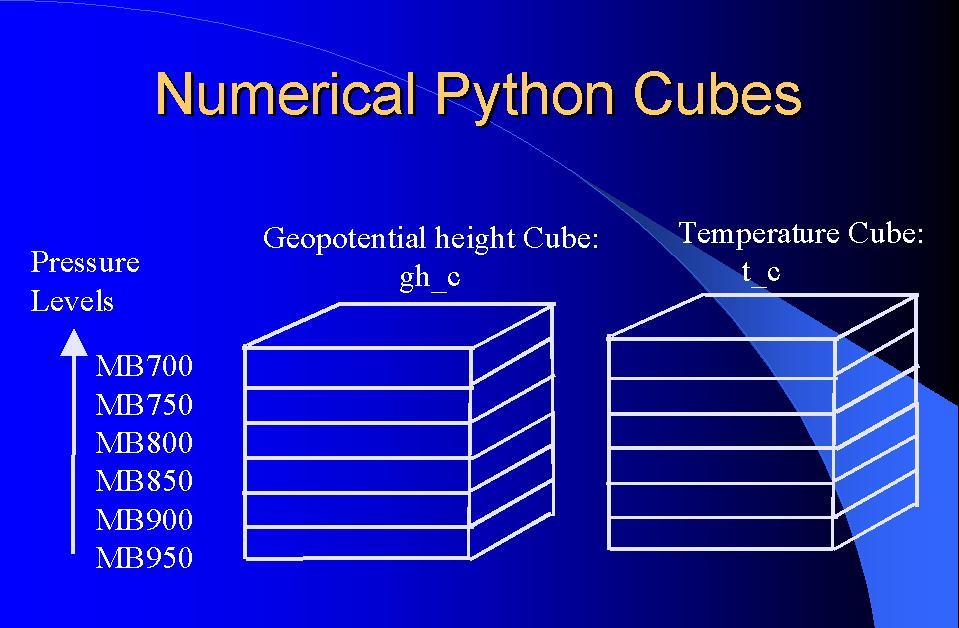

from numpy import *
> python
>>> from numpy import *
>>> vector1 = array((1,2,3,4,5))
>>> print vector1
[1 2 3 4 5]
>>> matrix1 = array(([0,1],[1,3]))
>>> print matrix1
[[0 1]
[1 3]]
>>> print vector1.shape, matrix1.shape
(5,) (2,2)
# Note the "shape" is the dimensions of the array
>>> print vector1 + vector1
[ 2 4 6 8 10]]
>>> print matrix1 * matrix1
[[0 1]
[1 9]]
# Note that this is not the matrix multiplication of linear algebra
grid3 = grid1 - grid2
If you want to add a constant value to a grid, then the syntax is like this:
grid = grid + 5.0
Converting a grid from degrees Kelvin to degrees Fahrenheit is as simple as:
gridF = (gridK - 273.15) * 9/5 + 32
In general, do not use loops to index through points in the grid. Performance will suffer greatly. Normally you access the entire grid at a time, using the above syntax. The operation you specify will be applied to EVERY grid point in the grid.
To initialize a grid, GFESuite extensions provide an empty array (set to zeros) guaranteed to be of the correct dimensions. The empty array is called "self._empty". To initialize a grid to a particular value, say 3.0:
grid = self._empty + 3.0
Note: self._empty is not available in Python in general. It is specific to GFESuite extensions such as Smart Tools and Smart Initialization which have knowledge of the appropriate grid dimensions for your domain.
less(), equal(), not_equal(), greater(), greater_equal(), less_equal()
For example, to create a mask called bgrid, which represents whether grid points of temperatures are greater than 50 degrees, the statement would be:
bgrid = greater(tGrid, 50)
For example, to create a mask called bgrid, which represents grid points from temperatures that are between 40 and 60, you could use a statement like this:
bgrid = logical_and(greater_equal(tGrid, 40), less_equal(tGrid, 60))
To create a mask which represents the grid points from temperatures that are below 40 or above 60:
bgrid = logical_or(less(tGrid, 40), greater(tGrid, 60))
where(conditional statement, assignment if true, assignment if false)
For example,
snowGrid = where(less(tGrid, 32), 10.0*QPF, 0.0))
takes the tGrid and compares it to 32 degrees. This results in a temporary boolean grid which has grid points that are set to true if the temperature is less than 32 and false if the temperature is greater to or equal to 32. The calculated snow grid is based on the boolean grid and the QPF grid. If the temperature is equal or above 32, then the "false"assignment is done, thus assigning zero to the snowGrid. If the temperature is below 32, then the "true" assignment is performed and the snowGrid is set to 10 times the value of the QPF grid.
finalQPF = clip(calcQPF, 0.0, 10.0)

Note the naming convention we use for cube variables: wxElement_c where _c indicates a cube.
print grid[25][45]
will print the value of the grid at the 45th column of the 25th row.
Refer to the Numerical Python documentation for more details. For cubes, you can access any individual level using indexing, or multiple levels using more complicated indexing. For example, if you have an relative humidity cube of 6 levels, and you want just the 2nd level (remember Python counts from 0), you would use this syntax:
rh_c[1]
If you wanted a cube that only had the 2nd through 4th levels, then the syntax would be:
rh_c[1:3]
The following function (from Smart Initialization) accesses the cubes of geopotential heights and temperatures. The true surface topography grid is also accessed:
def calcFzLevel(self, gh_c, t_c, topo):
We start with a grid that contains -1. The self._minus variable is a 2-D grid of -1s. During the calculation up the column, the grid will contain -1 if the freezing level has not yet been reached, or the actual freezing level if the level has been reached. We make the assumption that the freezing level can never be -1 (since that is below sea level).
fzl = self._minus
The for loop "i" goes from 0 to the size of the z dimension of the cube of gh. The 0 represents the 'z' dimension.
for i in xrange(gh_c.shape[0]):
We use a try/except block to "catch" the failure on the first iteration of the for loop. The exception is caused by accessing the "i-1"th level which is illegal when i == 0.
try:
# Interpolate between cube levels
val = gh_c[i-1] + (gh_c[i] - gh_c[i-1]) / (t_c[i] - t_c[i-1]) * (273.15
- t_c[i-1])
except:
# Handle the first level
val = gh_c[i]
After we have calculated "val", which is a 2-D grid, representing the freezing level height based on the two temperatures and two gh values at each layer, then we apply it only in certain cases. The following statement only assigns the calculated freezing level if it already hasn't been assigned, and the actual temperature of the layer is less than freezing.
fzl = where(logical_and(equal(fzl, -1), less_equal(t_c[i], 273.15)), val, fzl)
The following simply converts the meters to feet.
fzl = fzl * 0.3048
And the grid is returned.
return
fzl
def calcPoP(self, gh_c, rh_c, QPF, topo):
The first few lines take the gh and rh cubes and only use the first 8 levels.
# only use the first
8 levels (up to MB600)
gh_c = gh_c[:8,:,:]
rh_c = rh_c[:8,:,:]
The less statement creates a 3-D mask based on the gh levels and the topography levels. The mask is 1 where the gh level is less than the topography and 0 where the gh level is greater or equal to the topography.
mask = less(gh_c, topo)
Wherever there is a 1 in the mask, rh_avg gets a 0. Wherever there was a 0 in the mask, rh_avg gets the value in the rh_c. The rh_avg is still a cube with 0 below the surface.
rh_avg = where(mask, 0, rh_c)
We need a count grid since we have to compute an average. The count is actually a cube that has a 0 if the rh_avg is 0 or less, and a 1 if the rh_avg is greater than 0.
count = where(greater(rh_avg, 0), 1, 0)
The add.reduce() sums up along the z-axis (the 0 indicates the z-direction, 1 the x-direction, 2 the y-direction), and returns a single number that is the sum in each column. It turns the 3-D cube into a 2-D grid. Count is a 2-D grid.
count = add.reduce(count, 0)
The add.reduce() sums up the rh grids in the column above the surface.
rh_avg = add.reduce(rh_avg, 0)
The real average relative humidity is calculated in this next compound statement. The average relative humidity is the rh_avg/count. We do some extra work to ensure that the count is not zero by adding 0.001 to the count.
dpop = rh_avg / (count + .001) - 70.0
We force dpop to be within the range -30 to 30%.
dpop = clip(dpop, -30, 30)
Finally we calculate the primary pop. If QPF < 0.02, then the
pop is 1000 * QPF. Otherwise set QPF to 350*QPF + 13.
pop = where(less(QPF,
0.02), QPF * 1000, QPF * 350 + 13)
We add in the delta pop.
pop = pop + dpop
We make sure the range is between 0 and 100%
pop = clip(pop, 0, 100)
And return the answer.
return pop